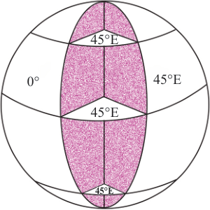
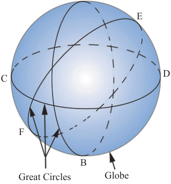

Since longitude lines meet at the poles, the distance between degrees of longitudes becomes progressively less towards the poles (Figure 3.14).

Figure 3.14: Determining longitudesGenerally, when locating or finding position of a place using latitudes, you start with the latitudes followed by longitudes.
Activity 3.9
 Activity 3.9
Activity 3.9(a) Take the world map or globe, and find your country on it.
(b) Study the latitude and longitude to identify the position of your country.
Exercise 3.6
Explain the relationship between longitudes and time.
Why does the distance through the Equator from West to East differ from that measured from North Pole to South Pole?
Why are parallels different from meridians?
Great circles
A Great circle is any circle that divides the Earth into two equal spheres (Figure 3.15). The equator and the Greenwich Meridian are both great circles. Similarly, all other meridians are also great circles. The equator, on the other hand, is the only latitude that is a great circle.

AGreat circles are important in our daily life. They are used in navigation and aviation. They are used to plot shore routes for ships crossing the oceans to save fuel and time. In aviation, pilots use great circles to mark the shortest path. In general, great circles are the shortest routes between any two places far apart on the earth’s surface.
Importance of latitudes and longitudes
The usefulness of latitudes and longitudes are as follows:
(a) Latitudes determine climatic variations. For example, the temperature decreases from the Equator towards the poles.